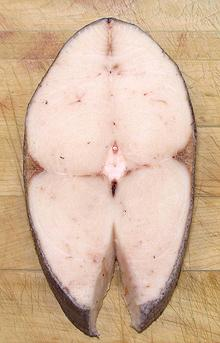

This fish is found on tropical and subtropical continental shelves worldwide. It can grow to 78 inches and 99 pounds, but is commonly around 59 inches. This often mislabeled fish is outstandingly delicious, but is also a "problem fish" Photo by US Government NOAA = Public Domain.
More on Snake Mackerels.
 This fish is rather large, so it is usually sold as cross section steaks. The photo specimen, a medium size steak, was 3/4 inch thick, 3-3/4 inches wide, 7 inches high, and weighed 9 ounces - wild caught from Taiwan.
This is an exceptionally delicious fish, a fish so good people rave about it, which causes many people to order seconds. This is a very bad idea (see Health and Nutrition). The flesh is soft and mild, but with enough flavor to be interesting, and with a rich and pleasant mouth feel. It can be successfully cooked by any method, from grilling to poaching. Escolar has long been a highly desirable sushi fish, but sale or posession of this fish is now illegal in Japan, to the distress of many sushi connoisseurs.
All its positives have resulted in fraudsters selling it as more expensive fish, especially the extremely expensive Chilean Sea Bass (which is actually Patagonian Toothfish, but how can you demand a high price for a fish with a name like that?).
A 2009 study found that 55% of sushi bars in New York were substituting Escolar for "White Tuna", "Albacore Tuna", or calling it "Super White Tuna". A 2010 to 2013 study showed that 84% of "White Tuna" served was actually Escolar. The FDA hasn't cracked down on this because they classify it as a tuna, and it is white.
Buying: I purchased frozen Escolar steaks from a large Asian market in Los Angeles for 2016 US $6.66 per pound in 1.5 pound bags, though I already knew the consequences - and there was an FDA warning poster right above the bags of frozen fish. One of the steaks had a distinctly orange tint, which I took as a warning.
Scales: This fish is covered with very tiny scales which are not easy to scrape off. Most commercial Escolar steaks are sold skin-on with scales, making the skin inedible.
Skin: The skin of this fish has very little shrink. The flavor is stronger than the flesh, but not disturbingly so, but it should be removed, as commercial samples I've tried have not been scaled. It is tough, and can be easily removed by the standard long knife and cutting board Method. Some recommend skinning deeply, supposedly removeng oils near the surface, but this has proven innefective. The skin can be peeled off after cooking, but for wet cooking, it will soften and break up easily making this more difficult.
The problem with this fish, and the very similar Oilfish, is that the "oils" providing mouth feel and flavor are actually indigestible wax esters, which can comprise up to 20% of the flesh. Eat a bunch of Escolar and you will know how the Exxon Valdez felt. Wherever you sit, you will leave an orange oil slick.
A few people suffer gastro-intestinal distress and diarrhea, but in most cases you just get the oil seep. This leakage is completely uncontrollable, you can't feel it happening, you can't stop it, and often it has little odor. It's called "Keriorrhea", Greek for "flow of wax". This can be extremely distressing for people who ate mislabeled fish, as the flow may kick in while at work or in public, and they often won't know about it until someone points it out.
The FDA has determined that this fish is not actually toxic, so has not banned it, but has posted guidelines for its consumption. They recommend keeping consumption to less than 6 ounces (some restaurants limit it to 4 ounces). Various suggestions for reducing the problem have proven ineffective. For a serving of sushi, I wouldn't worry about it, but this is definitely not a fish you want for a main dish.
Because Science! I ate an 8 ounce serving for dinner, just two ounces above the FDA maximum, on an empty stomach. I suffered no gastric distress, however, by morning the orange oil slick was well in evidence. Because of the limited quantity of fish, and empty stomach, I was able to quickly flush it through. Some people report the discharge lasting for many hours.
Scombroid Poisoning Escolar is a member of the suborder Scombroidei, along with Mackerel and Tuna. These fish all require careful handling and refrigeration after catching, to prevent bacterial histamine production. Histamine poisoning is quite uncomfortable, but generally survivable, though it can be very serious for persons with histamine allergies, such as bee sting allergy. Immediate antihistamine treatment is called for in such cases.
sf_escolz 150602 r 160409 - www.clovegarden.com